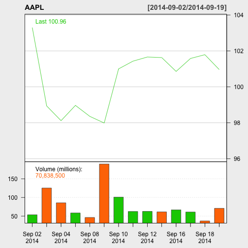

This app allows you to query stock information for five well-known tech companies:
- Apple
- Oracle
- Microsoft
- Yahoo
Terry
This app allows you to query stock information for five well-known tech companies:
The stock information is presented in graphs for each selected company. Multiple selection will present the graphs side-by-side for easy comparison and analysis.
Here is an example of the graph. This is generated using an R packaged named quantmod.

The app is hosted on shinyapps.io. Go ahead and give it a try.
http://ithinkicancode.shinyapps.io/ShinyApp1
Look forward to any feedback. Thank you.